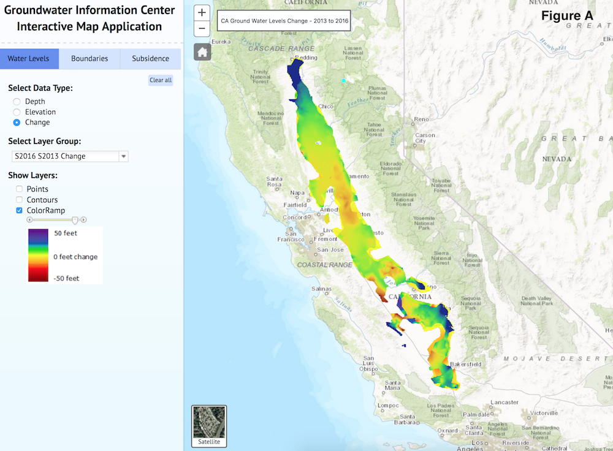
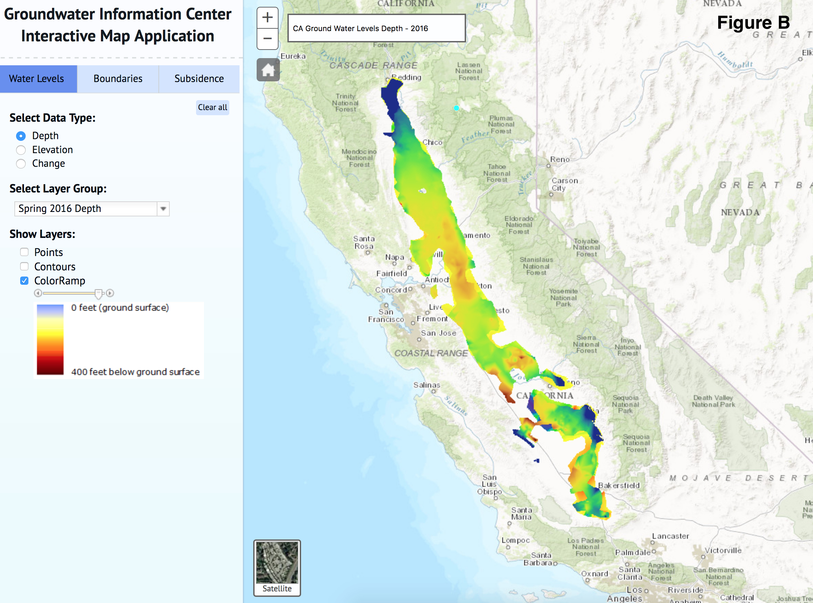
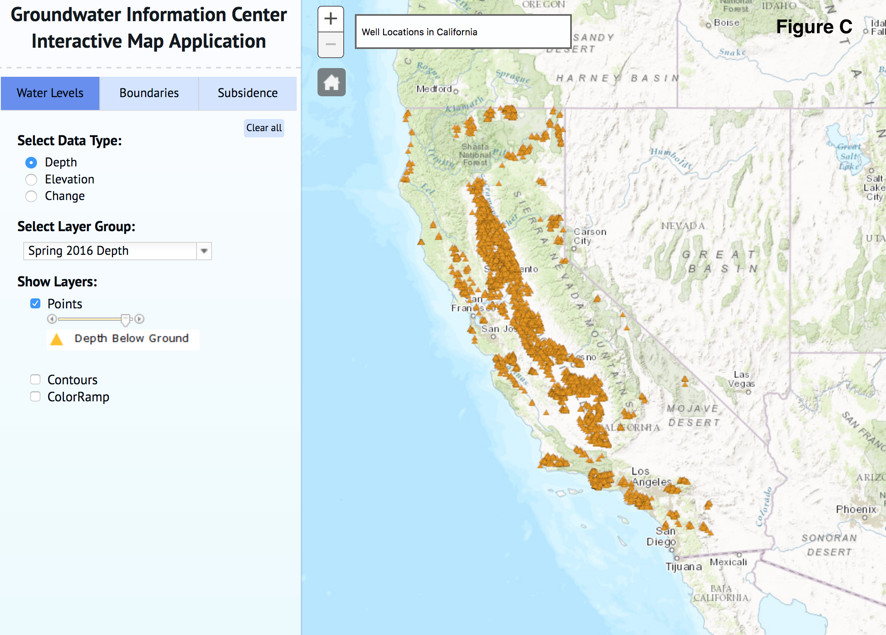
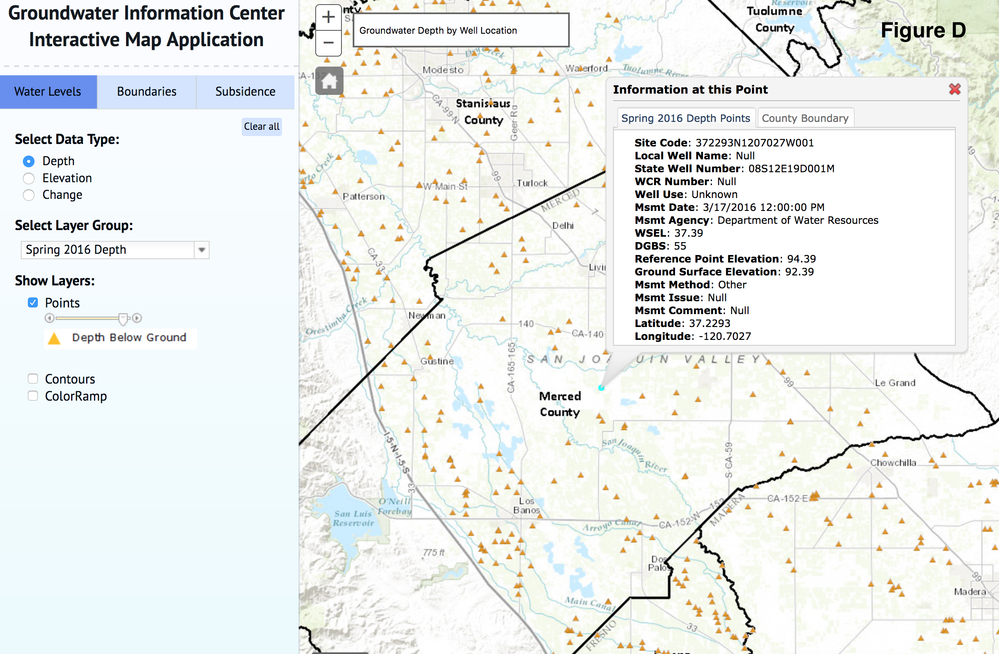
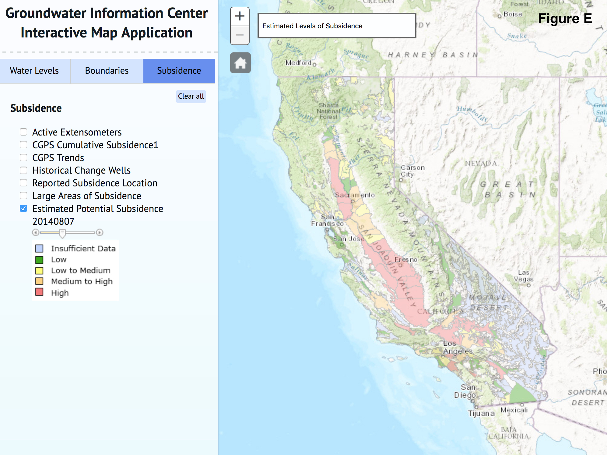

Cristina grew up in the San Francisco Bay Area as the child of two computer scientists. From an early age, she loved being outside, particularly river rafting and hiking through the northern California and Oregon forests, rivers, coastline and mountains. She moved to DC for college where she studied International Relations and Conflict Resolution at George Washington University and Georgetown, respectively. Following this, she spent five years at the State Department and two years at Tufts University. She is particularly interested sustainable water and energy management in the urban environment. At DUSP, she hopes to gain a deeper understanding of transboundary environmental planning, economics, and environmental policy as well as how corporate environmental policies can be aligned to promote environmental sustainability. In her free time, Cristina continues to love hiking, travelling, photography, yoga, and reading science fiction and fantasy books. She lives in Davis Square with her partner and two cats.
Cristina is currently in her second year as an Master in City Planning student with the Environmental Policy and Planning Group.
The Central Valley of California, ranging from Redding to just past Bakersfield, is one of the world’s largest agricultural areas and it gets a large portion of its water from groundwater basins. California’s Department of Water Resources (DWR) is responsible for maintaining the use of California’s over 500 groundwater basins. In their effort to do so, they have developed the Groundwater Information Center which maintains a variety of publications and tools including the Groundwater Information Center Interactive Map Application (GICIM) which will be examined herein and can be accessed through the link at the bottom of this post.
The GICIM was developed and published as a means of supplementing the data presented in the numerous reports and images you can find on the DWR’s website. The initial page of the GICIM gives the user the opportunity to look at the depth levels (produced each Fall and Spring), elevation (produced each Fall and Spring), and change between depths (seasonal data with the choice to select a variety of comparison years and seasons) of California’s groundwater basins. When presenting any three of these in map form, the GICIM has the ability to choose between showing data points, contours or a ColorRamp. You do have the option of layering any three of these types of data with the boundaries and/or subsidence maps, though this can make the map unwieldly unless zoomed in significantly. At any given time, the GICIM only permits you to show just one of the data types, which it can represent in any selection of the three ways you choose. It is important to note that the ColorRamp and contours layers are only developed for the main Central Valley region of California; an example of the Central Valley ColorRamp map for change in depth from 2013 to 2016 can be seen in Figure A. This can be contrasted with a ColorRamp map of the Central Valley showing the actual depth of groundwater in Figure B.
All of the groundwater basin depth information is collected from various wells located throughout the state of California, with each well being represented by a data point in Figure C. Figure D shows an individual well site’s information, including its depth, longitude and latitude, elevation, and state well number. The GICIM tool utilizes all of the data points from the wells the DWR tests to develop a forecasting model which is meant to help determine estimated subsidence levels for various regions of the state (seen in Figure E). It is important to note that the estimated subsidence map does show areas where there is insufficient data (light blue) to determine future subsidence levels. Ultimately, this tool is not only useful for researchers seeking to understand the current, historical, and potential future levels of groundwater depth and subsidence, but also for individual citizens who would not have otherwise had access to approachable and easy to use visual information of this kind.





You can access the GICIM here.